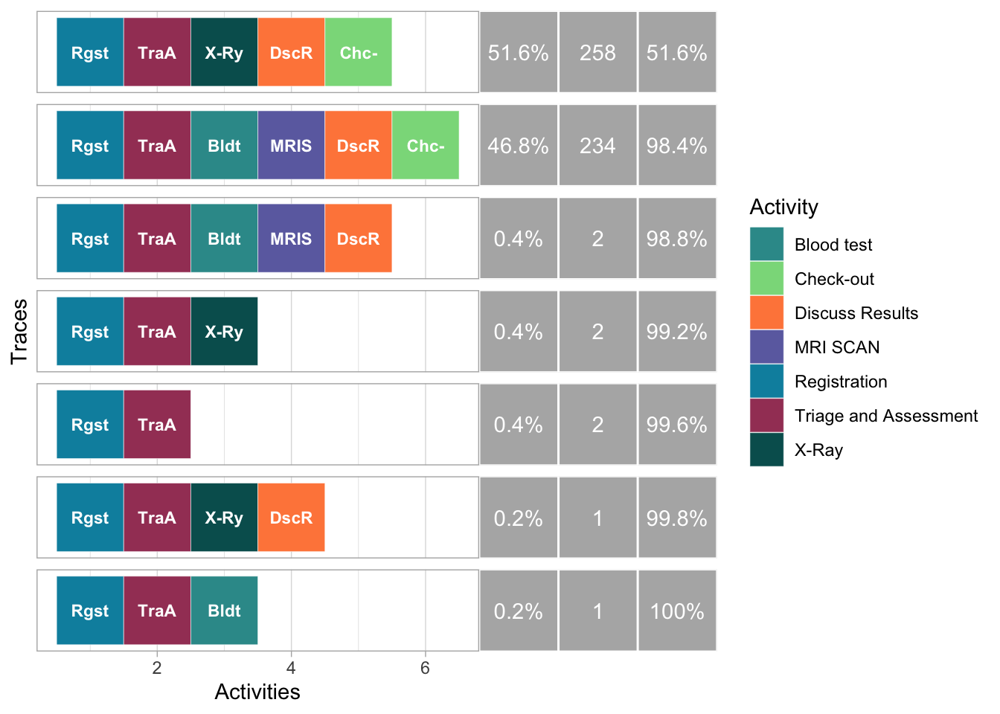

# Laden van de benodigde libraries
library(bupaR)
library(xesreadR)
library(eventdataR)
library(edeaR)
library(processmapR)
library(processmonitR)
library(processanimateR)
library(processcheckR)Process Mining

Inleiding
Processen zijn overal. Door ze te analyseren, kunnen interessante inzichten worden verkregen. In deze demo laten we een aantal van de mogelijkheden van process mining zien. Daarbij laten we ook direct de code zien die gebruikt kan worden om de analyses uit te voeren.
1. Wat is het?
Process mining is een analytische benadering waarmee organisaties inzicht kunnen krijgen in hun bedrijfsprocessen op basis van feitelijke gegevens. Het maakt gebruik van logbestanden en gegevens uit informatiesystemen om de werkelijke uitvoering van processen te visualiseren en analyseren.
2. Waar kan het voor worden gebruikt?
Het nut van process mining ligt in het identificeren van inefficiënties, bottlenecks en variaties in processen, waardoor organisaties verbeteringen kunnen aanbrengen, kosten kunnen verlagen en de operationele efficiëntie kunnen optimaliseren.Het helpt ook bij het begrijpen van complexe bedrijfsprocessen en het nemen van datagestuurde beslissingen voor procesoptimalisatie.
3. De data
Om te beginnen met het toepassen van process mining zijn een aantal libraries nodig:
Verder is een zogenaamde “Event Log” nodig. We maken hier gebruik van een synthetische dataset waarin de trajecten zijn geregisteerd van patiënten die op de spoedeisende hulp belanden. Met behulp van deze dataset illustreren we de mogelijkheden van process mining. Hieronder een voorproefje van de dataset met bijbehorende relevante termen (de data zelf is te vinden onder “# A tibble 6x7”):
# Toon de eerste regels van de dataset
head(patients)# Log of 6 events consisting of:
1 trace
6 cases
6 instances of 1 activity
1 resource
Events occurred from 2017-01-02 11:41:53 until 2017-01-04 16:07:47
# Variables were mapped as follows:
Case identifier: patient
Activity identifier: handling
Resource identifier: employee
Activity instance identifier: handling_id
Timestamp: time
Lifecycle transition: registration_type
# A tibble: 6 × 7
handling patient employee handling_id registration_type time
<fct> <chr> <fct> <chr> <fct> <dttm>
1 Registrati… 1 r1 1 start 2017-01-02 11:41:53
2 Registrati… 2 r1 2 start 2017-01-02 11:41:53
3 Registrati… 3 r1 3 start 2017-01-04 01:34:05
4 Registrati… 4 r1 4 start 2017-01-04 01:34:04
5 Registrati… 5 r1 5 start 2017-01-04 16:07:47
6 Registrati… 6 r1 6 start 2017-01-04 16:07:47
# ℹ 1 more variable: .order <int>Een typische Event Log bevat vaak de volgende elementen:
Case Identifier: dit verwijst naar het onderwerp dat de activiteiten doorloopt, in ons geval de patiënt.
Activity Identifier: dit verwijst naar de activiteiten in het proces, zoals Registratie, Triage en Assessment, Bloedtest, enzovoort.
Activity Instance Identifier: een unieke identifier voor elke keer dat de activiteit wordt uitgevoerd.
Life Cycle Identifier: Dit geeft de status van de activiteit aan, in dit geval ‘started’ of ‘completed’.
Timestamp: de begin- of eindtijd van een activiteit. Er zijn tijden voor ‘started’ en ‘completed’, zodat de duur van de activiteit kan worden berekend.
Resource Identifier: Dit geeft aan wie de activiteit heeft uitgevoerd of waar deze heeft plaatsgevonden.
4. De event log verkennen
Wanneer je een dataset hebt waarop je process mining wilt toepassen, moeten dus eerst de bovengenoemde elementen worden geïdentificeerd in die dataset.
In de patients dataset horen de volgende kolommen bij de elementen:
# Toon welke kolommen uit de data bij de benodigde event log elementen horen
patients %>% mappingCase identifier: patient
Activity identifier: handling
Resource identifier: employee
Activity instance identifier: handling_id
Timestamp: time
Lifecycle transition: registration_type Hier zien we bijvoorbeeld dat de kolom “patient” uit de dataset is vastgesteld als het element “Case identifier”.
4.1 Activiteiten en Resources
Het is ook interessant om te verkennen hoeveel verschillende soorten activiteiten er zijn, of hoeveel verschillende resources of patienten.
paste("Aantal verschillende activiteiten:", n_activities(patients))[1] "Aantal verschillende activiteiten: 7"data.frame("Unieke_activiteiten" = unique(patients$handling)) Unieke_activiteiten
1 Registration
2 Triage and Assessment
3 Blood test
4 MRI SCAN
5 X-Ray
6 Discuss Results
7 Check-outpaste("Aantal verschillende resources:", n_resources(patients))[1] "Aantal verschillende resources: 7"data.frame("Unieke_resources" = unique(patients$employee)) Unieke_resources
1 r1
2 r2
3 r3
4 r4
5 r5
6 r6
7 r7paste("Aantal verschillende patienten:", n_cases(patients))[1] "Aantal verschillende patienten: 500"Een voorbeeld van een relevante vraag kan zijn: hoe vaak worden de verschillende activiteiten uitgevoerd? Welke activiteiten worden relevatief het meest uitgevoerd? Onderstaande resultaat geeft antwoord op deze vragen.
activities(patients)# A tibble: 7 × 3
handling absolute_frequency relative_frequency
<fct> <int> <dbl>
1 Registration 500 0.184
2 Triage and Assessment 500 0.184
3 Discuss Results 495 0.182
4 Check-out 492 0.181
5 X-Ray 261 0.0959
6 Blood test 237 0.0871
7 MRI SCAN 236 0.0867We kunnen het resultaat als volgt interpreteren:
Eerder is vastgesteld dat er 500 patienten zijn in de dataset. Al deze patienten doorlopen de activiteiten “Registration” en “Triage and Assessment”.
Het is logisch dat de patienten daarna opsplitsen over verschillende behandelingen, zoals de activiteiten “X-Ray”, “Blood test” en “MRI SCAN”.
Interessant is om te zien dat niet alle patienten de activiteiten “Discuss Results” en “Check-out” doorlopen. Als vervolg hierop kan worden onderzocht of deze activiteiten misschien worden overgeslagen na een specifieke activiteit. Hier komen we later op terug.
4.2 Traces
Welke paden van activiteiten doorlopen patiënten zoal?
De relevante term hiervoor is “trace”. Een trace is een opeenvolging van één of meerdere activiteiten. Met andere woorden: een trace is eigenlijk een pad van activiteiten dat wordt gevolgd door een individuele patient vanaf het begin tot het einde van het proces. In dit geval zijn er 7 unieke paden van activiteiten die patienten hebben gevolgd.
paste("aantal verschillende traces:", n_traces(patients))[1] "aantal verschillende traces: 7"traces(patients)# A tibble: 7 × 3
trace absolute_frequency relative_frequency
<chr> <int> <dbl>
1 Registration,Triage and Assessment,X-Ra… 258 0.516
2 Registration,Triage and Assessment,Bloo… 234 0.468
3 Registration,Triage and Assessment,Bloo… 2 0.004
4 Registration,Triage and Assessment,X-Ray 2 0.004
5 Registration,Triage and Assessment 2 0.004
6 Registration,Triage and Assessment,X-Ra… 1 0.002
7 Registration,Triage and Assessment,Bloo… 1 0.002Een voorbeeld van zo’n pad is “Registration, Triage and Assessment”. Dit pad komt 2 keer voor in de dataset. Van alle traces die voorkomen is 0.2% deze specifieke trace. Het komt dus niet vaak voor dat een patient enkel geregistreerd en onderzocht wordt, maar dat er geen verdere behandeling plaatsvindt.
5. Visualisaties
Bovenstaande analyses geven interessante inzichten, maar er zijn meer mogelijkheden. Zo kunnen de verschillende processen ook visueel worden weergegeven in een process map.
5.1 Aantallen
# Er kunnen verschillende gegevens in de map worden getoond:
#
# absolute: aantal executies van activity
#
# absolute-case: aantal cases
#
# relative: proportion of all activity instances with this type
#
# relative-case: proportion of all cases that did this activity
#
# relative-antecedent: percentage dat uit deze "source komt", komt in deze flow
#
# relative-consequent: percentage dat in "target" terecht komt komt uit deze flow
patients %>% process_map(frequency("absolute-case"))Er zijn een aantal interessante inzichten uit deze visualisatie te halen:
Verreweg de meeste patienten doorlopen een pad waarbij ze beginnen bij Registration en Triage and Assessment, daarna een Blood test en MRI scan doen of een X-Ray krijgen, om vervolgens bij Discuss Results en Check-out te eindigen.
Zoals eerder vastgesteld, zijn er een aantal (5) patiënten die “Discuss Results” en “Check-out” overslaan. Deze patiënten zijn niet afkomstig uit een specifieke activiteit maar uit drie verschillende activiteiten: Triage and Assessment (2), Blood test (1) en X-Ray (2). De oorzaak van het overslaan van “Discuss Results” en “Check-out” lijkt dus niet te liggen bij één specifieke activiteit.
5.2 Tijden
Er kan ook onderzocht worden hoe lang alle activiteiten gemiddeld duren, zie het schema hieronder.
patients %>% process_map(performance(FUN = mean,"hours"))In dit schema is duidelijk te zien dat het na Triage and Assessment relatief lang duurt voor patienten aan de beurt zijn bij de volgende activiteit. Mogelijk is hier dus nog ruimte voor verbetering.
In het vorige schema met aantallen is te zien dat 2 patienten vanaf Triage and Assessment geen behandeling ondergaan. De reden hiervoor zou een lange wachttijd kunnen zijn. Maar gezien het zeer lage aantal patienten (2) lijkt het er in ieder geval niet op dat de relatief lange wachttijd ervoor zorgt dat veel patienten besluiten geen behandeling te ondergaan.
De schema’s met aantallen en tijden kunnen ook gecombineerd worden in één schema:
patients %>% process_map(type = performance(FUN = mean, "hours"), sec = frequency("absolute_case"))5.3 Trace Explorer
Het kan ook interessant zijn om dieper in de traces (zie 4.2) te duiken. Bijvoorbeeld: welk pad doorlopen patiënten het meest? In dit geval is dat het pad Registration - Triage and Assessment - X-Ray - Discuss Results - Checkout.
trace_explorer(patients, coverage = 1)
6. Conformance checking
Soms zijn er bepaalde aannames die je doet over hoe processen verlopen in jouw organisatie. Deze aannames kunnen getoetst worden. Zo kan er bijvoorbeeld gecheckt worden of patienten altijd eindigen met een check-out.
patients %>%
check_rule(ends("Check-out"), label = "r1") %>%
group_by(r1) %>%
n_cases()# A tibble: 2 × 2
r1 n_cases
<lgl> <int>
1 FALSE 8
2 TRUE 492Uit bovenstaande resultaat kunnen we concluderen dat 8 patienten niet eindigen met een check-out.
7. Bronnen
Code: https://bupaverse.github.io/docs/index.html
Dataset: https://bupaverse.github.io/docs/public_logs.html